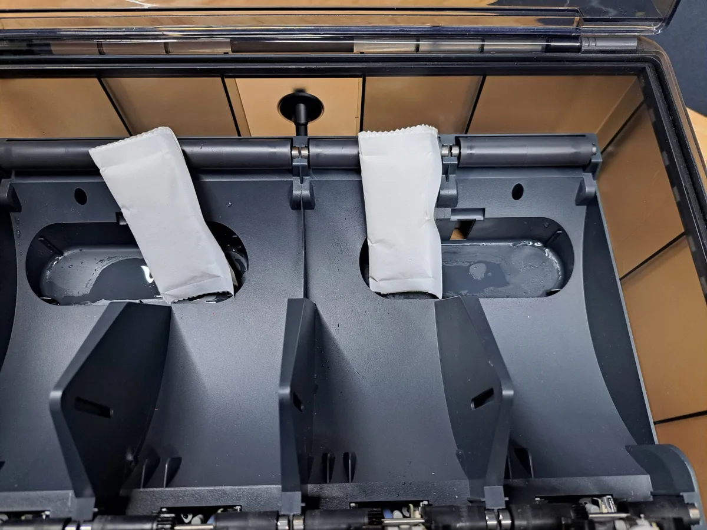
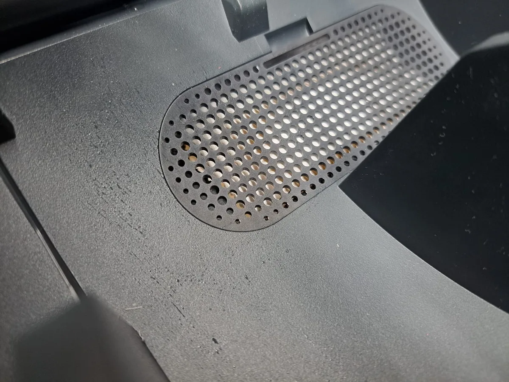
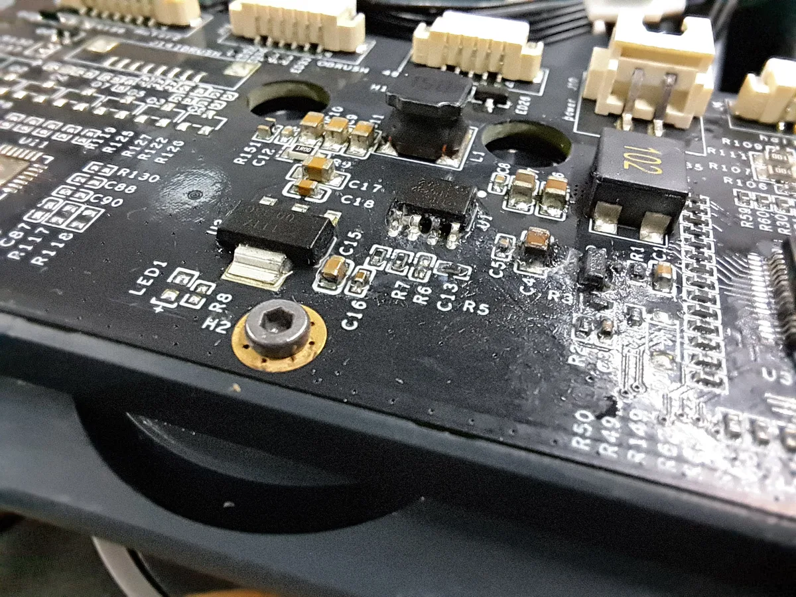
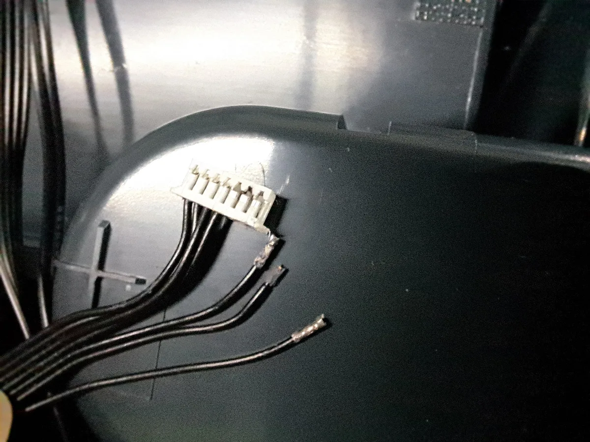
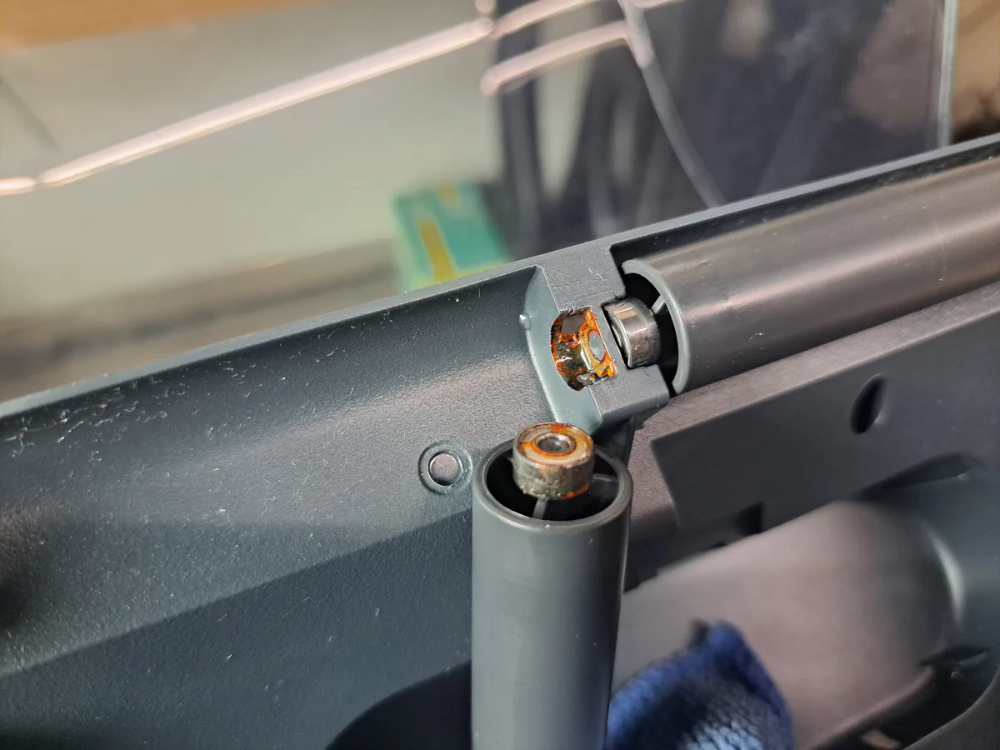
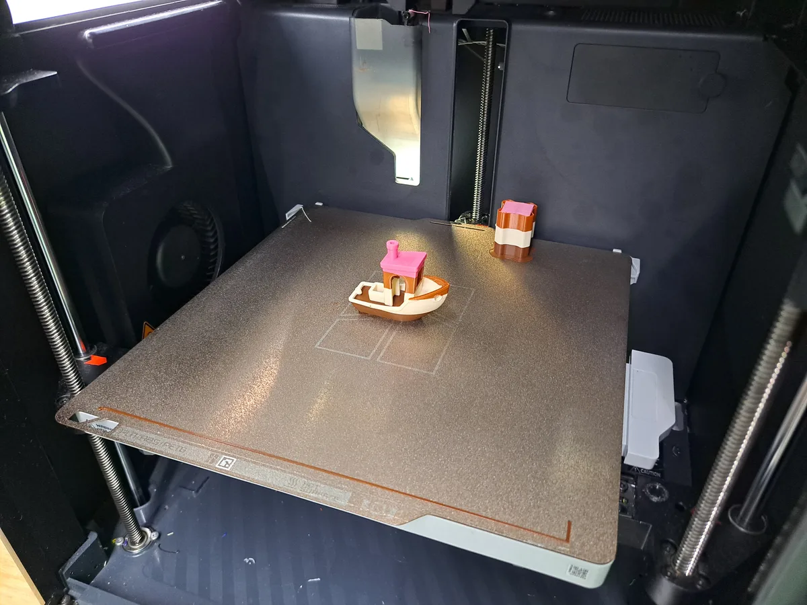

Humedad en el AMS: así se ve una placa corroída por dentro
· Caso del taller
El AMS está hecho para guardar filamento seco. Por eso sorprende cuando la que se echa a perder por humedad es la electrónica de adentro. Aquí van dos AMS que nos llegaron al taller con el mismo fondo: agua donde no debía haber, y una placa que ya no responde.

Lo que vieron los dueños
Los dos casos empezaron distinto. En el primero, el AMS llevaba un par de meses sin mucho uso y se volvió inconsistente. A veces leía los filamentos y los metía sin problema; otras veces se “obstruía” y no jalaba nada. En el segundo, los dueños creían que sus propios desecantes se habían derretido dentro del AMS. Al conectarlo a la impresora ya no encendía para nada.
Son síntomas que fácilmente se confunden con un atasco o con un alimentador gastado. Por eso conviene abrirlo y ver antes de cambiar piezas a ciegas.
Lo que encontramos al abrirlos
En el primer AMS había marcas de humedad en los huecos donde van las bolsas de desecante y, más abajo, en la carcasa, en los cables y en la placa principal. La humedad no se queda donde la pones. Escurre y se junta en la parte baja, justo donde está la electrónica.


La placa y las terminales
El segundo AMS estaba peor. La placa tenía rastros de humedad acumulada alrededor de los chips y varias terminales dañadas por corrosión. La terminal de alimentación, la que le da corriente a todo el AMS, estaba completamente corroída. Con esa pieza así, el AMS no enciende, sin importar lo demás.
Los cables también la pagaron. Al sacar los conectores, algunos pines salieron verdes o se quedaron sueltos.


El óxido no se queda en la electrónica
Los ejes donde giran los carretes también tenían baleros con óxido superficial. No es lo que deja muerto al AMS, pero sí lo que hace que los rodillos giren con más esfuerzo y que, con el tiempo, el filamento entre con tirones.

Qué hicimos
En el primer AMS limpiamos y secamos la placa, revisamos conectores y cables para descartar rupturas, y lo volvimos a probar. El error seguía. La impresora lo detectaba unos segundos y luego se encendían los cuatro indicadores rojos: falla de comunicación con la placa. Para confirmarlo, le pusimos una placa que sabemos que funciona y el AMS trabajó normal con la impresora. El diagnóstico fue claro: la placa original estaba dañada y había que cambiarla.
En el segundo, con la terminal de alimentación corroída por completo, limpiar no alcanza. La corrosión se come el metal. La cotización incluyó la placa nueva, el juego de cables y los alimentadores que estaban dañados. Al terminar, cada AMS se prueba imprimiendo a cuatro colores antes de entregarlo.

Cómo evitar que le pase al tuyo
- Usa el desecante en su bolsa original y en su lugar. Nada de desecante suelto ni de bolsas que se rompan. Si se humedecen, se pueden hacer pasta y escurrir.
- Revisa el indicador de humedad. Cuando cambie de color, seca o cambia el desecante. No esperes a que el filamento empiece a tronar.
- Si lo vas a dejar de usar semanas, sácale el filamento y guárdalo cerrado. Un AMS parado en un cuarto húmedo junta agua sin que lo notes.
- No lo pongas sobre el piso ni junto a ventanas. Los cambios de temperatura condensan agua por dentro.
- Si ves gotas o manchas blancas en la tapa o en el fondo, desconéctalo. Secarlo a tiempo es mucho más barato que una placa.
Cuándo traerlo al taller
Si tu AMS ya no enciende, si se prenden los cuatro indicadores rojos al conectarlo o si lee los filamentos a veces sí y a veces no, vale la pena abrirlo. Te mandamos fotos de lo que encontramos y la cotización antes de cambiar cualquier pieza, igual que en estos dos casos.
Sigue leyendo
¿Tu impresora tiene algo parecido?
Diagnóstico en el taller con fotos de lo que encontramos y la cotización antes de cambiar cualquier pieza. Recibimos impresoras de todo México por paquetería.